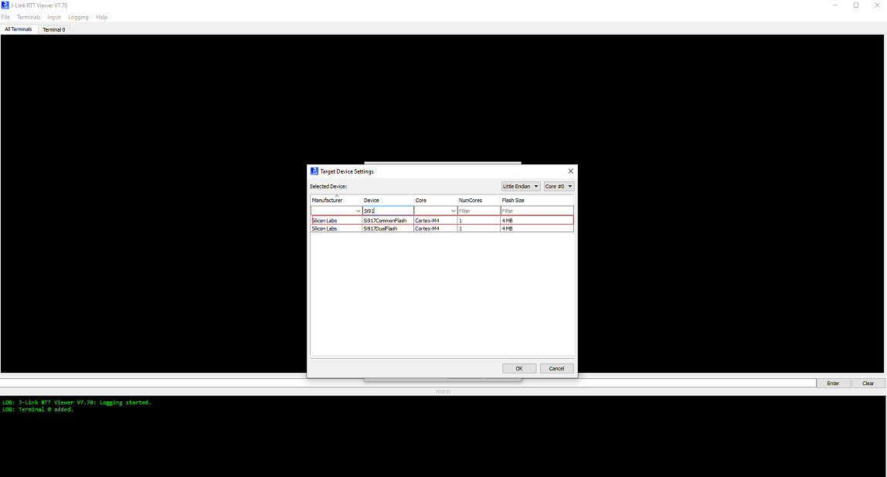

JLink RTT Environment Setup for a SiWx917 SoC Device
For 917 SOC Common Flash Boards, Ozone debugging support is not enabled. To get the logs for 917 SOC, the JLink RTT tool will be used.
Auto detection of SiWx917 SoC device in JLink RTT is not enabled.
Follow the steps to configure the SiWx917 SoC with Latest JLink RTT Logging tool.
Steps to Configure the SiWx917 SoC on the JLink-RTT Logging
Update the JlinkDevices.xml and .elf files found on the Matter Artifacts Page.
Download the JLinkDevices.xml file and copy it in your JLink RTT installation path shown in this JlinkDevices Folder. If there is no JLinkDevices Folder, create a
JLinkDevicesfolder and copy theJlinkDevices.xmlfile into it.In the
JLinkDevicesfolder, create aDevicesfolder and then create a sub-folder namedSiliconLabs.Download the .elf file (Flash driver) and copy it in the created
SiliconLabsfolder.
Launch JLink RTT. The SiWx917 Common Flash SoC device should be visible in the Device field’s selection list.

Select SI917COMMONFLASH and, click OK.